ІМЕРСИВНА ІНСТАЛЯЦІЯ
СИНЕРГІЯ
Переживання п'яти стихій
Scroll
Переживання п'яти стихій
“СИНЕРГІЯ” — це подорож станами через світло, звук і простір. Усередині сфери глядач проживає п’ять стихій — від Землі до Синергії.
Це не шоу та не атракціон. Це досвід, який працює з внутрішнім відчуттям.
Сфера створює автономний та багатофункціональний простір досвіду. Вона існує як об'єкт між природою та технологією.
Вхід у сферу прихований світловою мембраною, що пульсує і реагує на рух. Глядач не бачить, що всередині — він проходить через чистий перехідний простір.
Вхід у Синергію - це момент відриву від зовнішньої логіки
Мінімалістична, але виразна сценографія.
Осьовий елемент конструкції, що тримає структуру.
Зонування простору для розміщення глядачів.
Світлові напрямні, що створюють глибину.
360° візуальне полотно, що охоплює глядача.
Кожна стихія — це окремий стан, що змінює відчуття простору, світла й звуку.
Коріння, тектоніка, густе світло. Простір стає щільним і монолітним.
Плавність, хвилі, каустики. Форма розчиняється, все переходить у потік.

Плазма, жар, напруга. Енергія згущується й прискорює ритм.
Легкість, туман, потоки. Прозорий простір, у якому все дихає.

Злиття всього прожитого. Всі стихії переходять у єдину світлову тканину.
Референсна база естетики для кожного з п’яти станів. Форми, текстури та світло, що формують простір.
 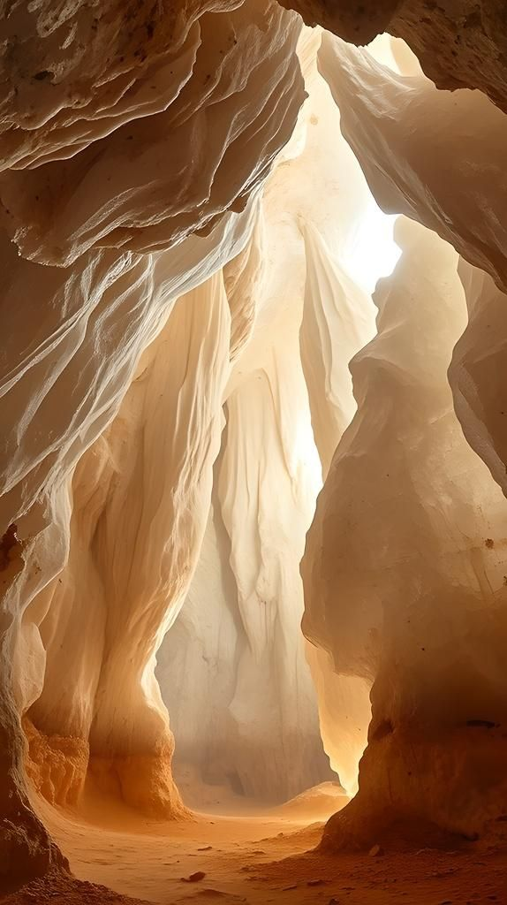
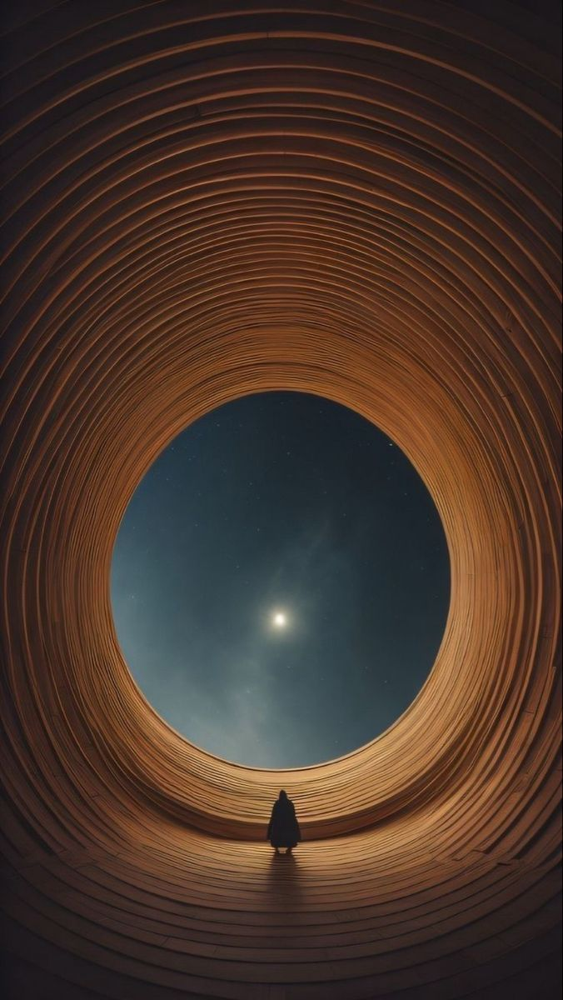
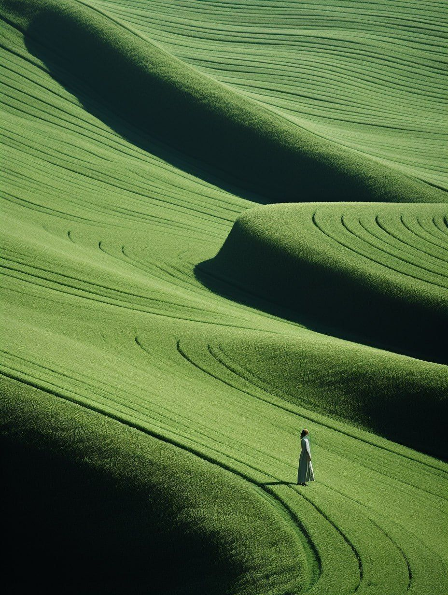
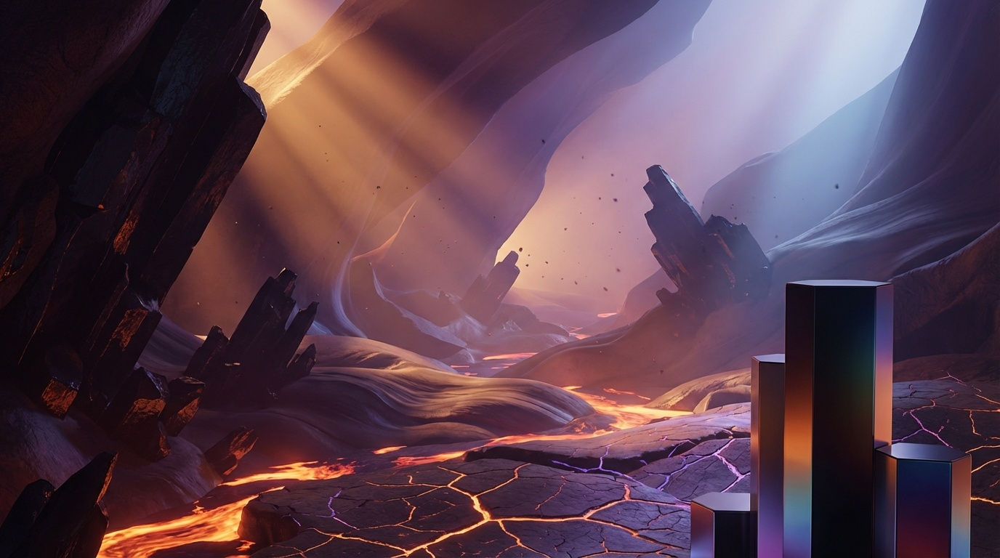
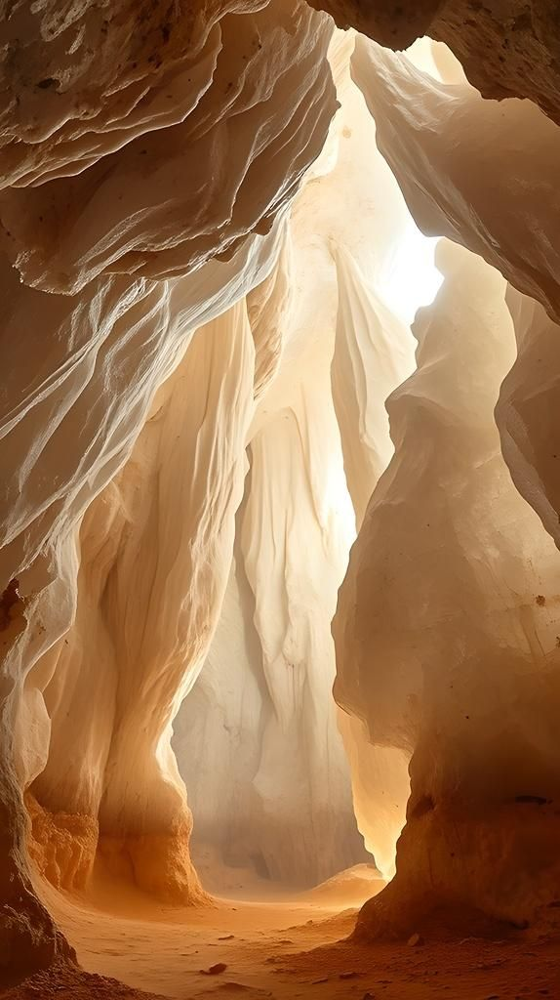
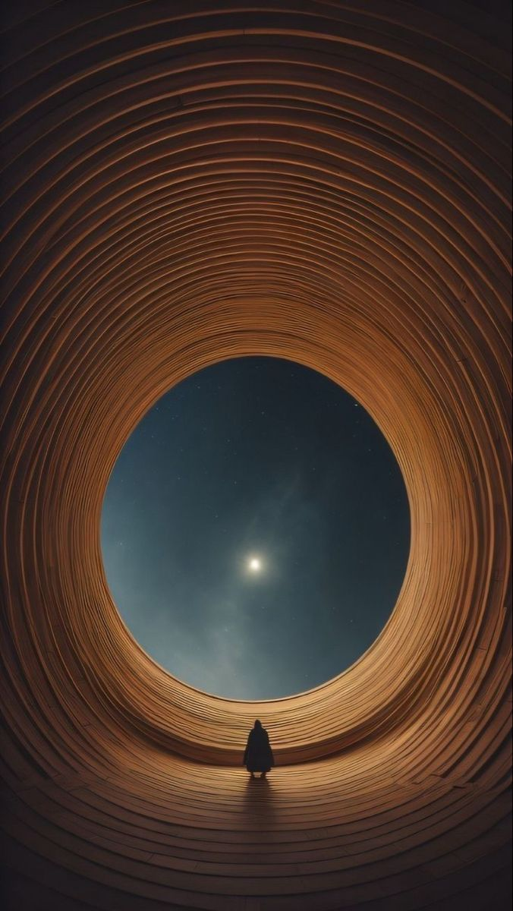
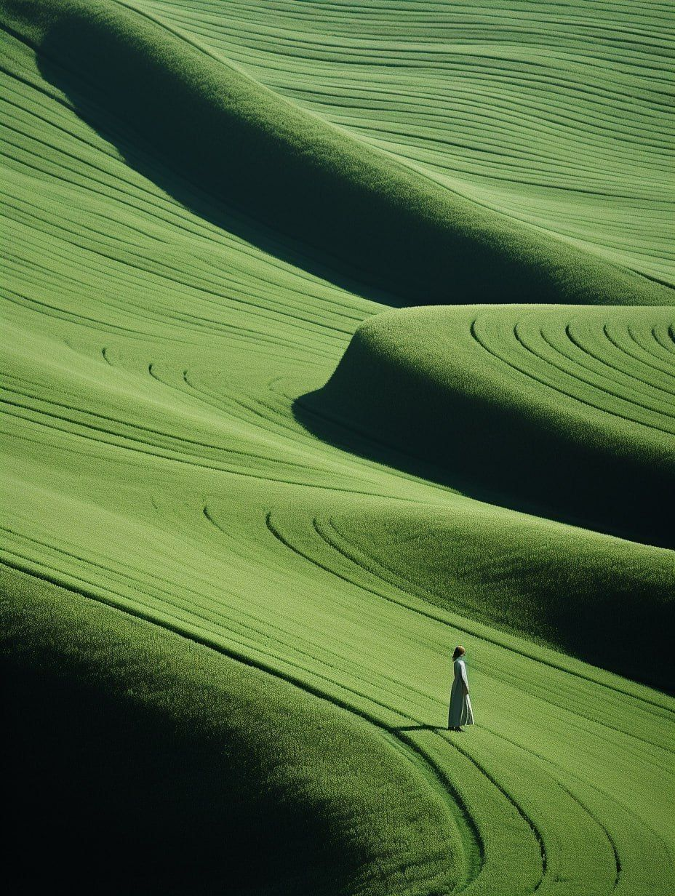
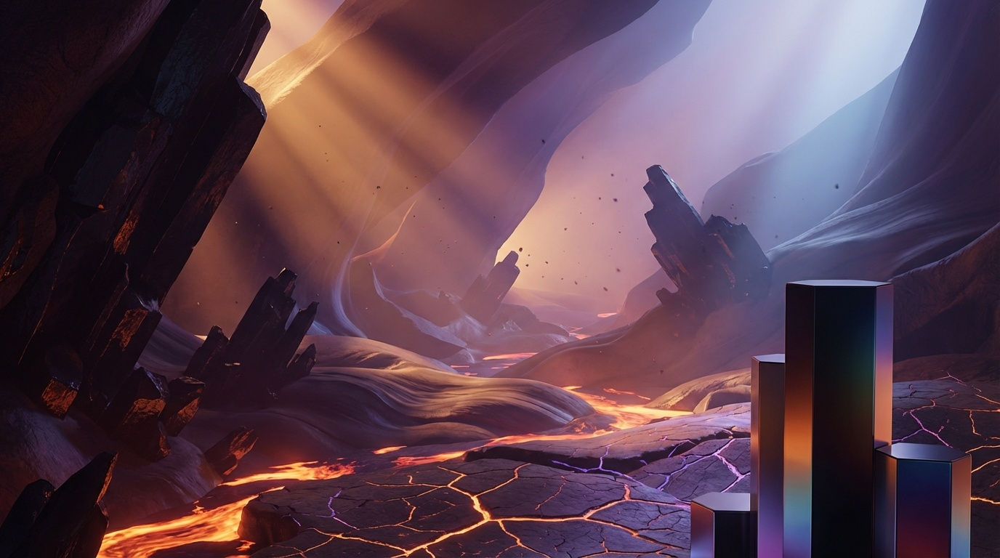
 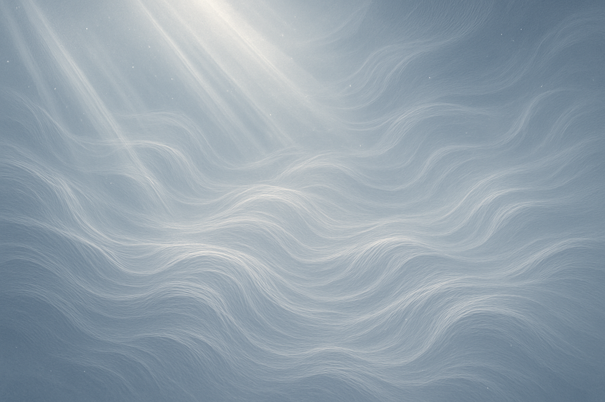
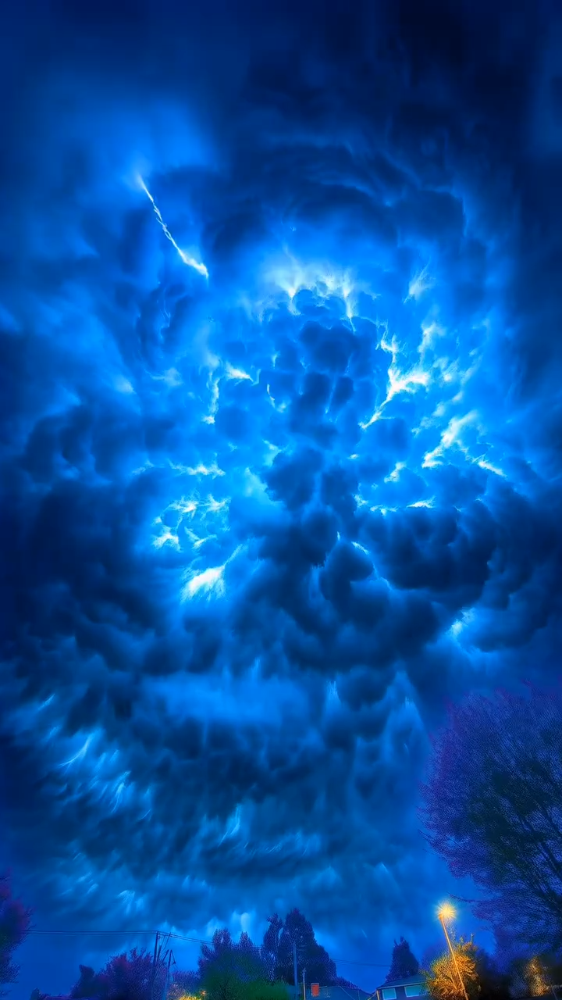
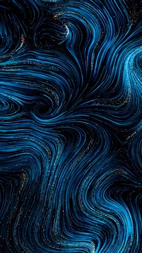
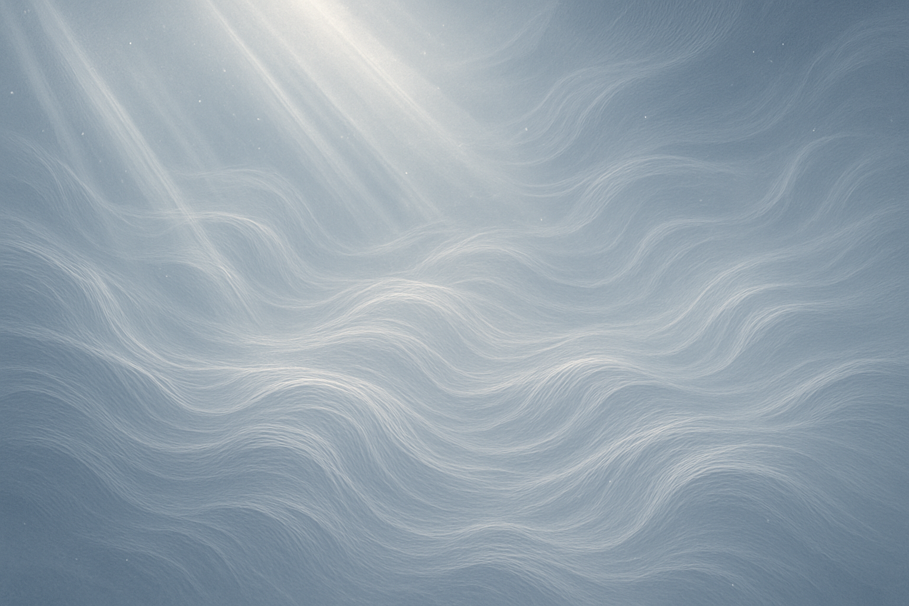
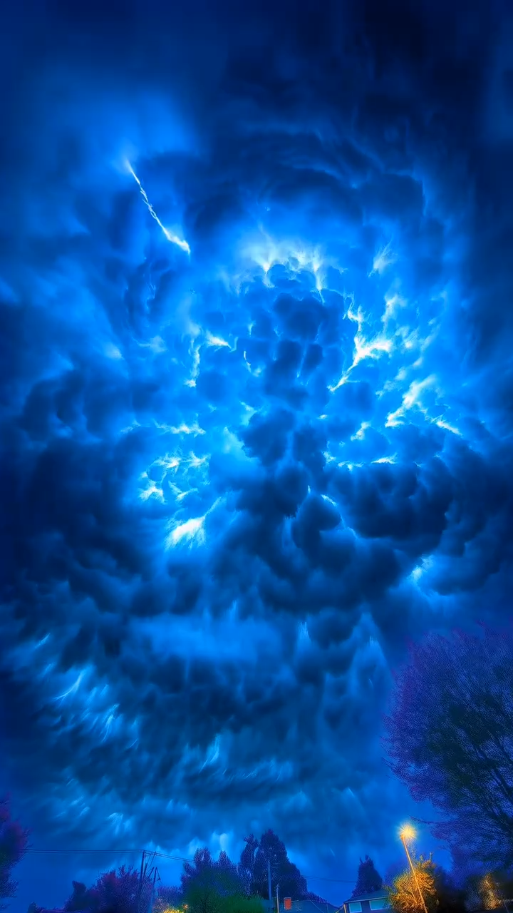
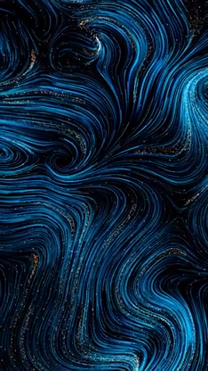
“Синергія” побудована як безперервний цикл тривалістю 15–20 хвилин. Інсталяція живе постійно, простір змінюється через колір, інтенсивність світла, фактуру, звук і ритм.
У відкритому просторі сфера працює як об’єкт споглядання. Її світіння створює новий акцент у природному середовищі — тихий, гармонійний, гіпнотичний.
Технологія тут — не самоціль, а засіб створити цілісний стан.
Синергія - простір, де стихії не конфліктують між собою, а поєднуються. Де форма, світло та звук стають мовою гармонії.
Інтеграція — це стан, у якому все збирається докупи.